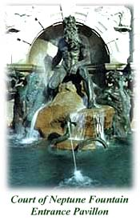

|
Resource Description Formats
Digital Library Standards
Information Resource Retrieval Protocols
ISO Standards
- ISO 639-2: Codes for the representation of names of languages-- Part 2: Alpha-3 code.
- ISO 639-5: Codes for the representation of names of languages-- Part 5: Alpha-3 code for language families and groups.
- ISO/DIS 25577 - Information and documentation
-- MarcXchange
- ISO 20775 - Schema for Holdings Information
International Standard
Serial Number (ISSN)
Metadata for Digital Content: Developing institutional policies and standards at the Library of Congress
Recommended Formats Statement:
Best practices for ensuring the preservation of, and long-term access to, the creative output of the national and the world in both analog and digital formats
Standards
in the Library of Congress Collections |

|